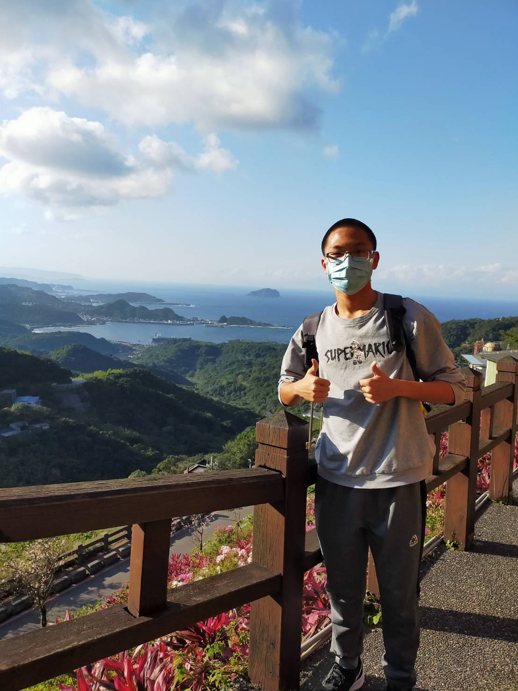
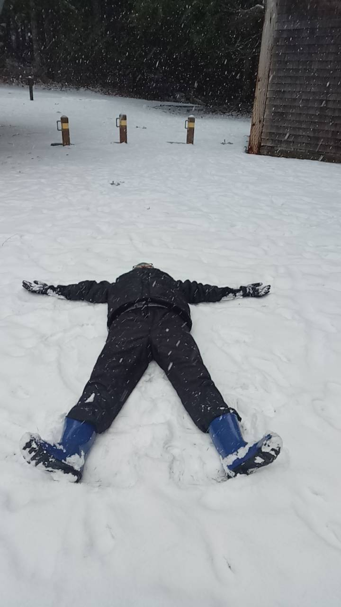
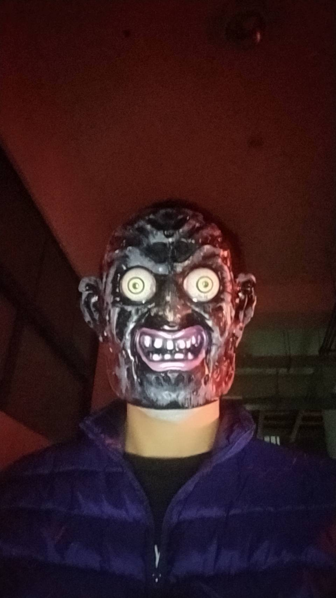

<
自我介紹
曾建龍



簡歷
姓民:曾建龍
出生日:2002/11/26
家人:父母跟一位哥哥
目前就讀台東大學
學歷
- 國小:
- 東原國小
- 國中:
- 東原國中
- 高中:
- 南科實中
- 大學:
- 台東大學
經歷
國三有到美國的西雅圖一趟,是一個為期兩個禮拜學校半贊助的學習旅程，只有我另外
一位同學兩個人去美國然後到機場會有一個美國教授接我們，我們就是在她們家待兩個
禮拜，這趟旅程有很多事情可以說，我就講一些比較重要的來講，我們到那邊的一個國
中3天、大學1天，他們的學生都勇於回答問題，上課的氣氛超熱鬧，在大學就是去觀光
一天沒有體驗上課，然後我們也過了他們的聖誕節跟跨年，吃了一個吃大火雞雞腿還收到
很多聖誕禮物，最重要的是我們還剛好遇到下雪，我第一次玩雪整個人超開心，旁邊的圖片
就是我整個人躺在雪上，總之這兩個禮拜真的太精彩了比如我們還去打保齡球、溜冰、去看
電影、去動物園、去農場搭馬車、最後還有去加拿大一天呢，真的是很棒的經歷。
活動
大一參與了理工學院的聖誕密室逃脫活動，我在裡面是扮演一位NPC，是殭屍王然後我體會到了
當活動人員的辛苦，不過當殭屍嚇人是真的很好玩，希望下次我是以遊玩的活動的人參與。